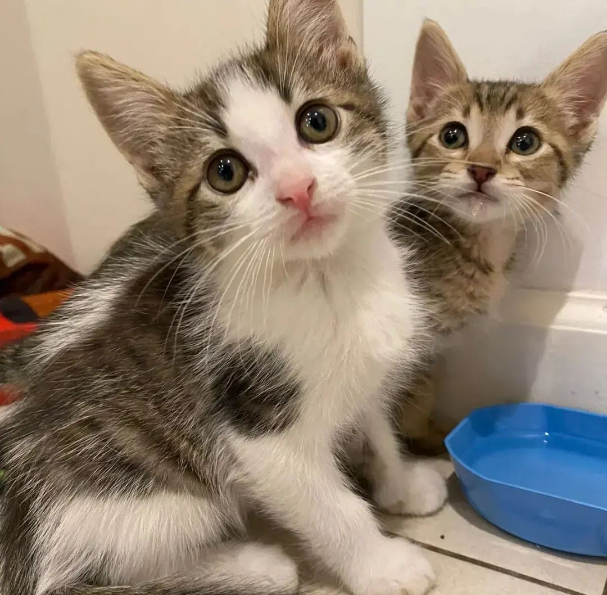

Adopta un gatito y salva una vida
Si estas pensando en sumar un integrate a tu familia, estas en el lugar indicado!
Hay muchas gatios esperando un hogar, animate a adoptar con el corazón
Si estas pensando en sumar un integrate a tu familia, estas en el lugar indicado!
Hay muchas gatios esperando un hogar, animate a adoptar con el corazón
¿Por qué debo esterilizar o castrar a mi gato?
Para evitar embarazos no deseados y super población de gatitos en situaciónde calle
Se previenen problemas de conducta de origen sexual: maullidos, vagancia nocturna, orina por todos lados y nerviosismo
Se previenen enfermedades
Lo primero a tener en cuenta es que no son perros. A ellos les lleva tiempo acostumbrarse a su nuevo hogar, de una semana a un mes, dependendiendo del gato. Esto se logra mas rápido a través de juegos, rutinas, comida rica y paciencia. Es sumamente importante darles su tiempo y no devolverlos si este tiempo se prolonga, porque es normal que así sea
Los gatos no siempre caen de pie! Aunque tengan el reflejo de enderezarse, caerá al suelo al igual que cualquier otro animal y podría lastimarse gravemente o incluso morir. El gato también puede escaparse a través del balcón, ventana o patio. Afuera puede encontrarse con pesticidas o veneno. Puede volver con infecciones o muchísimas enfermedades algunas hasta mortales las mas conocidas son VIF y VILEF.